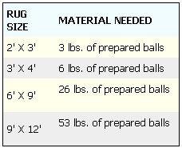
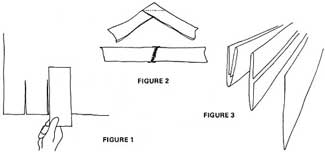
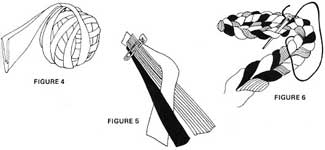

"Snug as a bug in a rug". When Ben Franklin coined that phrase it probably described exactly how he felt... sitting in his platform rocker in front of a cosy Franklin stove, with his head in the clouds and his feet resting warmly on a braided rug.
The practical comfort of braided rugs would have been completely compatible with the frugal and ingenious creator of Poor Richard . . . they effectively insulate the floor from cold and the eye from barrenness.
The beauty of it all is that braided rugs are just as practical and just as comfortable now as they were 200 years ago . . . and you can probably handcraft a sturdier one today for less cost and effort than ever before.
The trick is in salvaging the jetsam of a cast-off society . . . unwearable or irreparable clothes-even old blankets-can all be cut up and used.
Ideally, raw materials for a braided rug should be pure wool . . . it even seems a little heretical to construct one out of synthetics. Besides . . . wool wears well, repels moisture, is warm and assumes a pleasing depth of color.
Your own discards can provide the beginnings for a rug and it's sort of fun-when the floor covering is finished-to see some favorite piece of apparel having a second lease on life. Friends, too, are likely contributors . . . especially when reminded that something of themselves will be braided into posterity. And don't overlook old Army and Navy uniforms, which are 100% virgin wool. There's a certain gratification to begotten from cutting them up and making something useful-finally-from the fabric. But the ripest pickings of all are at thrift stores and rummage sales. Thrift stores often have stock that's been on the rack too long and rummage and garage sales, being short term operations, must liquidate all inventory at closing time. Not only are prime woolen pickings often absolutely free at such a sale . . . you'll probably be thanked if you cart them off on the last day of the event .
Make sure your gleanings are clean before you cut them up. There's no point in making a dirty new rug, and it's more pleasant to work with clean materials anyway. Dry-cleaning isn't necessary, however, even though the rug materials are wool. Simply rip out major seams and hems, remove zippers, buttons and trim . . . and send what's left through the washing machine.
Use reasonable precautions when doing this washing. Don't mix light colors with dark and do use mild soap and cool water. Any bleeding that takes place will simply mute the colors to more subtle tones and any shrinkage will compact the fiber for a longer wearing rug. The clean, dry pieces should be pressed flat before marking and cutting.
First cut a piece of cardboard 3" wide and about 12" long. Lay this on the flat fabric and mark off lines the width of your pattern and as long as possible (Figure 1). A crayon, chalk, or felt tip pen can be used for this marking, as long as the color contrasts with the color of the material.
To utilize all of a piece of fabric, you can cut the strands either lengthwise or crosswise . . . but not diagonally. Completely dismantle one whole garment and cut it up (strands will be of varying lengths) before you begin on another.
Suppose you've just slashed one Class A olive drab Army uniform into 3" wide ribbons. The next step is to join all the pieces of this particular fabric into one continuous strand.
Each piece is sewed to the others with a bias seam (Figure 2). That is, overlap two strips at right angles and sew diagonally across the corner. If you don't have a machine, use strong thread and sew by hand. Then cut away the "excess" triangular corner and press the seam open and flat with your fingers. Add the next piece to either end and continue joining strips until you have one long strand of-in this case-olive drab.
After an entire garment is transformed into a single long ribbon, begin at one end of the strip and fold each side in one-half inch. Fold the cloth again in the center and pin through all thicknesses. The strand-ready for braiding-will then be 1 " wide and four layers thick (Figure 3).
Now begin to roll the folded end of the strip, turning in the next few inches as you go. Fold and roll until the whole strand has been transformed into a compact ball (Figure 4). Fasten the end to the ball with a safety pin.
Some heavy weights of wool are easier to handle if they're lightly moistened before you do this folding and rolling . . . an automatic pressing process takes place in the firm ball and the strand is not likely to unfold when you open the ball for braiding.
After one entire coat, skirt, or whatever has been cut, joined, folded, rolled and balled, use the same procedure on the next piece of fabric . . . and the next . . . until your pile of discards has been turned into a box of multi-colored, vari-sized balls. You can either begin to braid at this point, or you can wait until you've collected more material.
If you have a 9' X 12' rug in mind, though, don't feel that you have to amass all the necessary wool before beginning. You need only 3 pounds of finished balls to make a 2' X 3' oval rug and you can easily enlarge it to 3' X 4' after the next rummage sale and, finally, to 9' X 12' whenever time and materials permit. In the meantime, you can go right ahead and use the floor covering.
Here's a guide to what's needed for various sized rugs:
Most rugs seem to "balance" best if the center is lightish and the final outer edge dark . . . what goes in between is purely dependent on the mood and scavenging ability of the rugmaker.
Some old timers used to bleach and dye their fabrics to obtain hard-to-get colors, but that was before such a wealth of ready rug materials became free for the asking. Today there seems to be no problem collecting enough colors to make an interesting rug.
Select three light colored balls for the braid that will be the center of the rug. Fold the top (loose) end of each strand in to eliminate raw edges and hand sew if necessary. Then pin and sew the ends together, with the outer strands fanning away from the center one. Start to braid.
Although the technique of braiding is generally familiar, one rule should be observed when making rug braids: since each strand is composed of four layers of cloth, the strips should be straightened and turned over (not pulled around, as in braiding hair) the center strand to insure the flat weave desired for a braided rug (Figure 5).
Continue braiding until one of the balls is finished, then attach the end of a new ball in the same manner in which the strips were first joined. At this point you're ready to start lacing the rug together before braiding further.
Braided rugs can be round, oval, square or elliptical, but for most purposes the oval shape is most functional and adaptable.
In starting an oval rug, the center braid is of utmost importance due to an immutable law of rug making: THE LENGTH OF THE CENTER BRAID IS ALWAYS THE DIFFERENCE BETWEEN THE WIDTH AND LENGTH OF THE FINISHED RUG.
For example, if the floor covering is to be 5' X 7', the center braid will be 2' long. This rule holds no matter how large or small the rug.
The life span of a braided rug depends largely on its lacing, so begin by using strong thread. If you're a string saver, fine . . . because heavy kite or parcel twine is usually satisfactory.
For this lacing, you'll need either a darning needle, a bodkin or a curved carpet needle with an eye large enough to take the thread being used. A big safety pin or a bobby pin will also work in a pinch.
Thread the needle (but do not knot the end of the thread) and measure off the length of completed braid needed for the rug you plan. Then form a gentle, flat "U" turn in the braid and extend an equal length back to the starting point (if your rug is to have a two foot long center, you'll need four feet of braid to make the double middle section).
Slip the needle through a single loop in the bend of the "U" and knot the thread. Now draw the thread first through a loop on the inside of the right leg of the "U" and then through a loop on the inside of the left leg. Continue lacing the two braids together right down to the spot where the three strands of the braid were first joined. Curve the continuing braid around this starting point and, using the same technique, lace it to the edge of the double central braid which it touches (Figure 6).
Keep right on braiding and lacing in this manner until you either run out of strips or finish the rug to the size you want. That is, braid to the end of a ball, lace the new length into the growing rug, add the next ball and braid on.
The only tricky part is in making the finished floor covering lie flat with no bumps or bulges. This is usually accomplished fairly easily, however, if you work on a hard, level surface and keep your growing rug flat as you braid and lace.
The logical place to start is, obviously, a table . . . but you'll probably soon move to the floor and stay there till you're done. When it gets big enough, do feel free to sit on your rug as you work . . . it'll be surprisingly cushiony and comfortable.
Your finished rug will be reversible and, being wool, is is beautifully moisture and dirt resistant. It may be vacuumed or swept-as any other rug is-but it should not be shaken or beaten since this may break or stretch the lacing. A severely soiled rug can be cleaned by sponging and brushing the surface with a mild ammonia and water solution, so long as the rug is kept flat at all times.
Men should not labor under the misapprehension that women have a corner on the rug braiding craft. What began as a household experiment for some families has turned into a lucrative cottage industry with everybody, including the children, participating.
A well made braided wool rug, particularly of the smaller "throw" variety, is a highly saleable item. What are advertised, and briskly sold by department stores as "braided rugs" are really tubular machine constructions that give the optical illusion of having been braided. Real braided rugs aren't available commercially simply because they can only be produced by hand . . . so the home rug braider has an automatic edge on the market.
Odd hours spent braiding rugs can produce a high return, since all you really invest are scraps of time . . . materials cost virtually nothing and profits are often close to 100%. Long winter evenings spent on the craft, then, can yield a tidy summer harvest of cash.
If you do want to sell your rugs, don't neglect a try at beingyour own merchandiser rather than consigning your work to a craft boutique middleman.
No signs or overhead required. Just find a likely spot near passing traffic, drape a few samples of your work over a fence or clothesline and have a seat . . . but don't get too comfortable. A display of vari-colored braided rugs exudes a potent charm that seems to seduce the most casual passer-by and loosen almost anyone's purse strings.
|
 Materials needed by rug size |
 Cutting and folding the material strips. |
 Braiding the rug strands. |